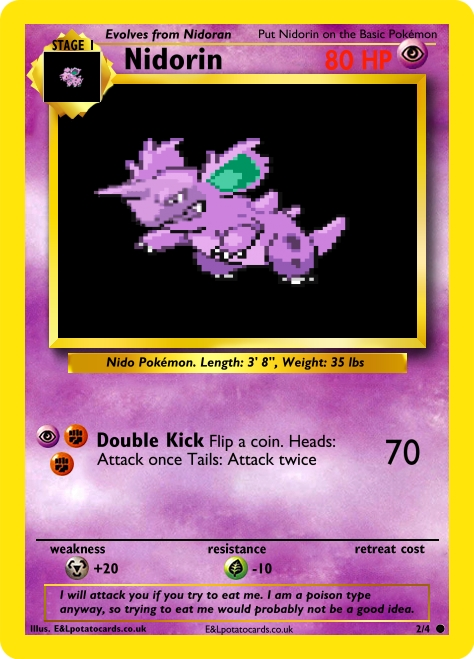
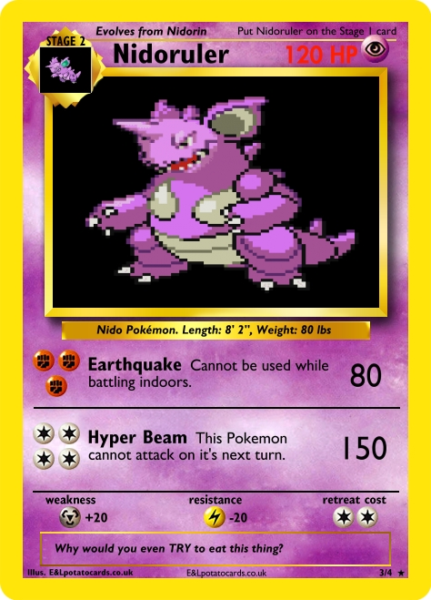
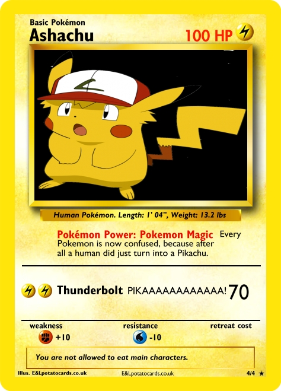
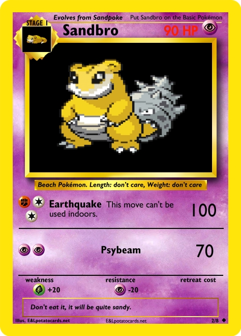
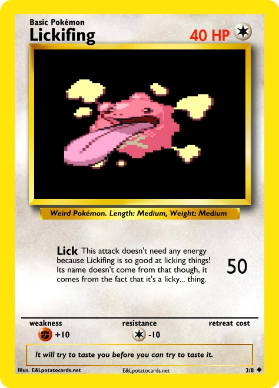
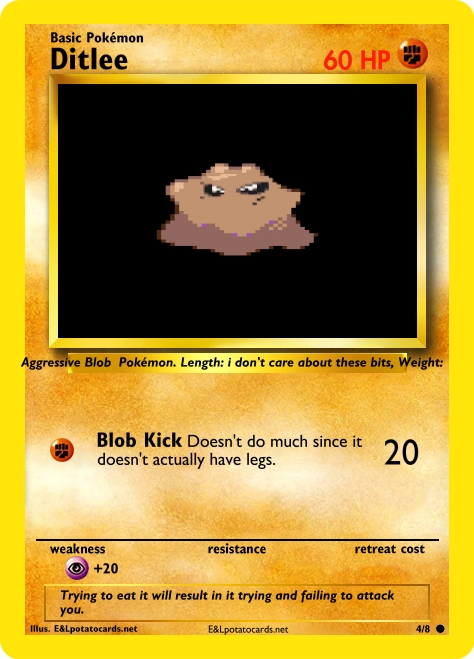
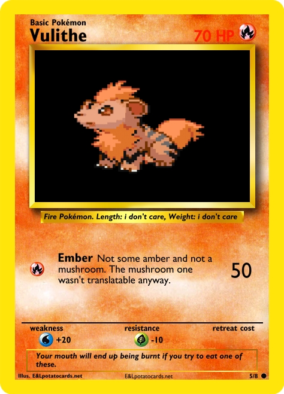
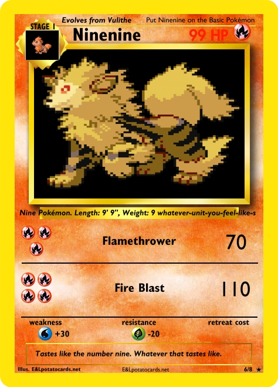
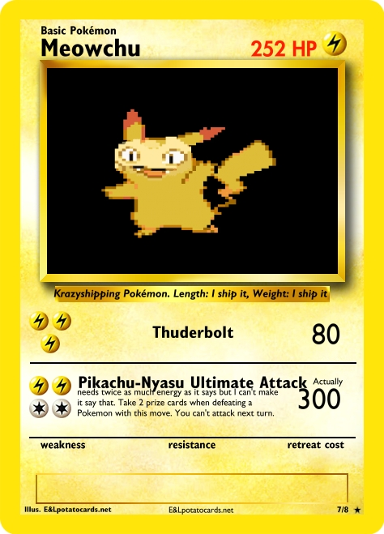
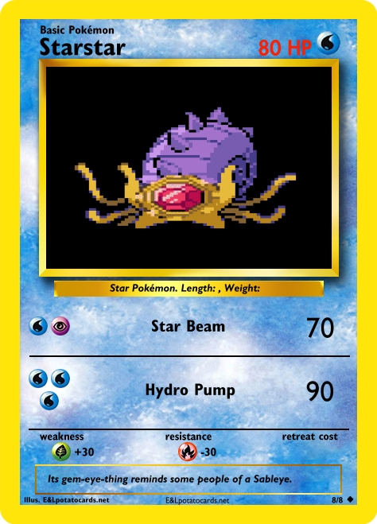

Note: These aren't actually real pokémon cards. They are all fan-made.
The Nidoran evolutionary lines became kind of awkward in Gen 2 and even more so in Gen 4. This fixes that... kind of?
Hypothetically the "rin" part should be pronounced "ree-n" but I keep pronouncing it "r-in"
I was originally planing to use the colour of the female Nidoran line instead of the male Nidoran line for this evolutionary line but when I went on Pokémon Fusion I ended up having these and kind of liking them
Do you remember what episode this was from? See, not every Johto filler episode was bad.
It's kind of cute. Pokémon in the TCG can only have one type but if it was in the games it would probably be a Ground and Psychic type.
Its head hasn't really changed much. I guess Sandshrew and Sandslash have similar looking heads?
This one just looks ridiculous...
It's quite an interesting concept and it's cute in a weird kind of way
The amber joke and the mushroom joke both work in the languages they are meant to work in, although it's kind of weird for a mushroom for go across the screen when talking about amber.
The name was an amusing coincidence and I wish the set was big enough that it could have been 9/x
I ship it so much. Also, I know that Meowth's Japanese name is officialy supposed to be Nyarth, but I just felt like using Nyasu, OK?
This one's name works in the same way Ninenine's does. It would have been better to end this set with Meowchu, but this is ok...